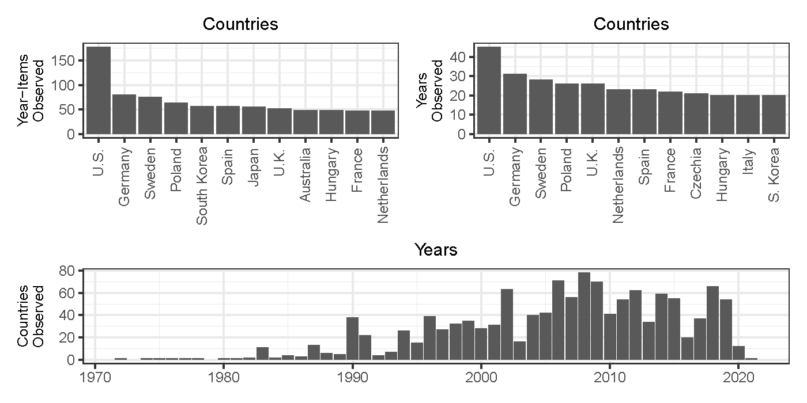
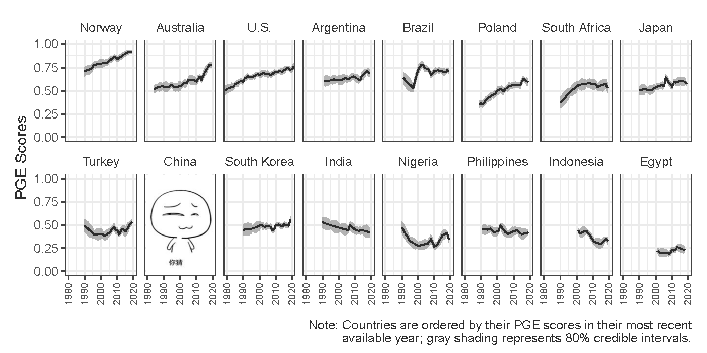
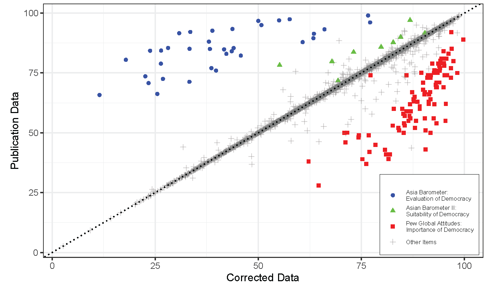
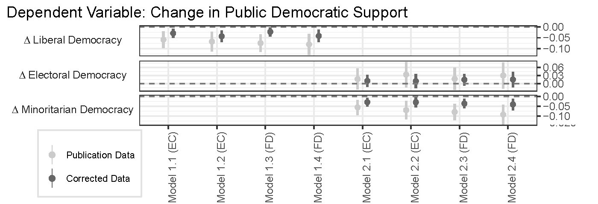
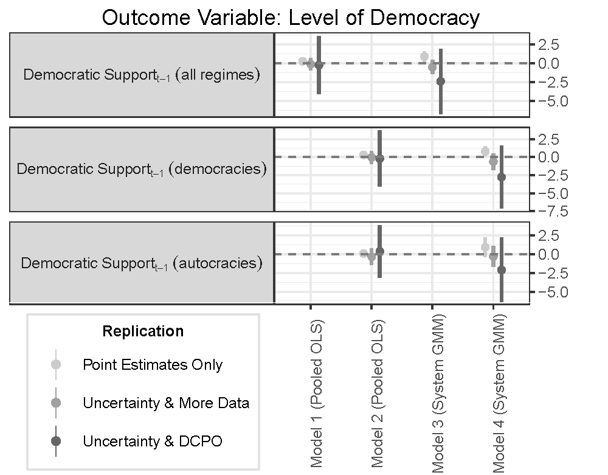
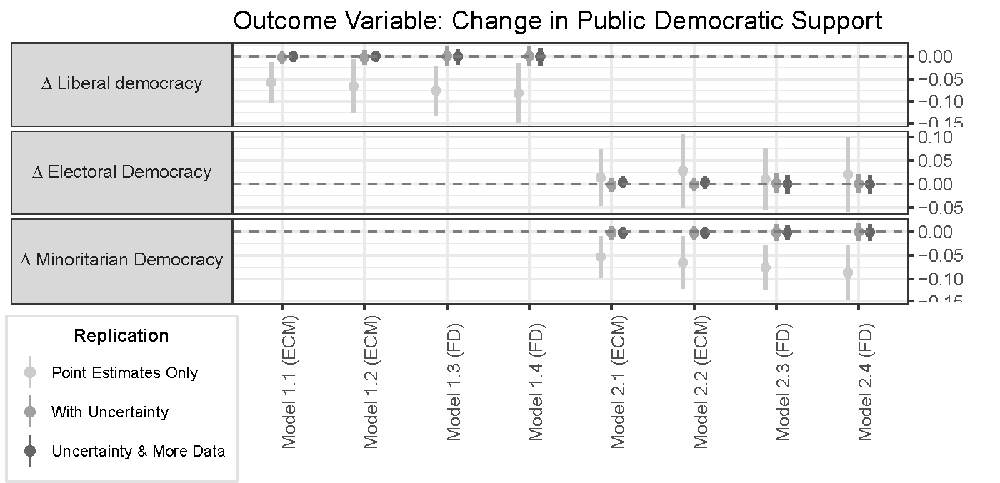

比较人心
学术浪漫·惊鸿系列第七期
清华大学政治学系
2022-11-24
个人简介
个人经历
- 政治科学博士（University of Iowa)
- 信息学（Graduated Certificate in Informatics)
- 清华大学计算社会科学平台(副主任)
- 清华数据与治理中心(副主任)
- Learning R with Dr. Hu and His Friends
研究特点：现代性与学科交叉
- W. 计量与数据科学
- 实验室和调查实验
- 潜变量分析、网络分析、空间分析
- 文本大数据分析、数据可视化等
研究领域
- W. 心理学
- 记忆政治（参与、公卫）
- 政治传播（官媒、青年）
- 身份认知（城乡、香港、司法）
- W. 经济学
- 宏观经济 → 微观认知 → 中观行为公共政策
- 社会经济不平等
- W. 语言学
- 语言能力的政治影响
- 语言政策的治理功能
概述
- 研究挑战：
- 经典概念 + 丰富数据 \(\overset{?}{=}\) 清晰认知
- 方法挑战：如何科学探知民心
- 数据科学时代的民意调查“已经过时”
- Hint: 呵呵~
- 庞杂数据中寻找普遍规律
- Hint: 不同国家、不同时间、不同样本的数据能放在一起吗？
- 数据科学时代的民意调查“已经过时”
- 应战：以优质方法探索理论规律
- Dynamic Comparative Public Opinion (DCPO)
- Case: Gender, democracy
挑战
核心关切
人心是最大的政治……社会主义核心价值观是凝聚人心、汇聚民力的强大力量……中国共产党领导人民打江山、守江山，守的是人民的心。—— 习近平 (2022)
我们必须坚持解放思想、实事求是、与时俱进、求真务实，一切从实际出发，着眼解决新时代改革开放和社会主义现代化建设的实际问题，不断回答中国之问、世界之问、人民之问、时代之问，作出符合中国实际和时代要求的正确回答，得出符合客观规律的科学认识，形成与时俱进的理论成果，更好指导中国实践。—— 习近平 (2022)
如何贯彻实现？
研究挑战
与人心相关的概念通常复杂且抽象
经典的议题
(民主、回应、获得感、性别平等、收入平等……)
+
丰富且累积的数据
(WVS, Global barometers, ?GSS, Pew, individual surveys…)
⇓
清晰的规律？
举例：民主支持 ↭ 制度民主化
民意 → 制度：
支持 ↑ → 民主化 ↑ (e.g., Inglehart & Welzel 2005, Claassen 2019)
支持 ↑ → 民主化 ⇣ (e.g., Fails & Pierce 2010)
制度 → 民意：
民主化 ↑ → 支持 ↑ (e.g., Wuttke et. al. 2020)
民主化 ↑ → 支持 ↓ (e.g., Foa & Mounk 2017)
民主化 ↓ → 支持 ↑ (e.g., Claassen 2020)
问题原因: 人心难测
- 经典方法
- 民意调查
- 过时了……吗？
- 质性研究
- 深度 vs. 广度
- 应战：参与式分析
- 神经科学与实验
- 因果性 vs. 复杂性 vs. 代表性
- 应战：吸纳
- 大数据
- 大数据迷思 -“每日上亿条”，“全网数据”，“《人民日报》所有……文章”
- 应战
- 大数据不是全数据
- 全数据不一定是好数据
- 好数据不一定是对数据
- 稳定性（知面不知心）：合理抽样，复刻检验 (Solt et al. 2016, 2017)
- 真实性（社会期望，政治正确）：Sensitive inquiry techniques (Tang and Hu 2022; Hu and Shao 2022)
- 因果性（人心 ⇄ 行为）：调查实验(Hu 2020; 胡悦 2021)
- 可比性（跨时、空、调查）：DCPO (Tai, Hu, and Solt 2022; Woo, Allemang, and Solt 2022)
方法挑战：数据多，结论乱
【回顾】民主支持 ↭ 制度民主化
行为差异


信息差异

解法: 潜变量分析与DCPO
基本思路
难题：Different people + Different questions ⇒ Incomparable data
⇓
Latent variable analysis
因素分析模型
(Factorial Models)
- 探索性因子分析(EFA)
- 验证性因子分析(CFA)
- 结构方程模型(SEM)
类型分析模型
(Topological Models)
- 项目反应理论
- MrP，MssP
- 跨群组项目反应
- DCPO
一个任何社会科学方法论课都会讲的例子
测量个体的“社会资本”
指标问题（X: 1~10）：
- 您是否信任身边人？
- 您在政府机关有没有亲戚？
- 您的朋友是否和您的想法经常一致？
\[\tilde{X} = (X_1 + X_2 + X_3)/3.\] 累加型综合法(additive scales)
- 缺陷:
- 无差权重
- 极值敏感
- 忽略极化
项目反应理论 (Item Response Theory, IRT)
- 天生为非线性指标设计（最适配二元变量，已派生适应定序变量和连续变量）；
- 易与Bayesian inference结合，解决潜在变量scale不确定问题；
- 在Bayesian框架下更好解决缺失值和“Don’t Know”问题；
- 易与跨群组估计结合，实现指标跨组可比
常用模型
Rasch Model (1PL)
→ Two-Parameter Logistic Model (2PL)
→ Three-Parameter Logistic Model (3PL)
→ Four-Parameter Logistic Model (4PL)
→ GIRT
→ DGIRT(DCPO)
来点公式(表怕)
- yiq∈{0,1}: subject
i’s score on questionq - θi∈{-∞, +∞}: Unbounded latent trait
- σq: Difficulty
Pr(yiq = 1) = logist-1(θi - σq)
Item response
Response theory
复杂化（2PL)：加区分度
\(Pr(y_{iq} = 1) = logist^{-1}(\color{red}{\kappa_q}\theta_i - \sigma_q).\)
- Discrimination: 一个问题多大程度上能区分做题者
\(Pr(y_{iq} = 1) = logist^{-1}[\frac{\theta_i - {\color{red}{\beta_q}}}{\color{red}{\alpha_q}}].\)
- Dispersion: Measurement error 大小
复杂化（3PL)：猜中可能
\[\begin{align} Pr(y_{iq} = 1) =& logist^{-1}[\frac{\theta_i - {\beta_q}}{\alpha_q}].\\ \Downarrow & \\ Pr(y_{iq} = 1) =& \color{red}{c_i + (1 - c_i)}logist^{-1}[\frac{(\theta_i - \beta_q)}{\alpha_q}]. \end{align}\]
复杂化（4PL)：佛系
\[\begin{align} Pr(y_{iq} = 1) =& c_i + (1 - c_i)logist^{-1}[\frac{(\theta_i - \beta_q)}{\alpha_q}].\\ \Downarrow & \\ Pr(y_{iq} = 1) =& c_i + (\color{red}{d_i} - c_i)logist^{-1}[\frac{(\theta_i - \beta_q)}{\alpha_q}] \end{align}\]
跨纬度比较
- 一维聚合 → 多维聚合
- Multidimentional IRT (MIRT, Chalmers 2015)
- 二元 → 定序
- Scoring rubrics，比如 Likert
- (Modified) Graded Response Model
- 可转化为定序的分类变量
- (Generalized) Partial Credit Model，Rating Scale Model
- 无序分类变量
- Nominal Response Model
- Scoring rubrics，比如 Likert
- 个体的群组效用
- Multilevel Mixture IRT with Item Bias Effects (Stegmueller 2011)
最新进展: DCPO
超越个体
问题：Individual fallacy
- 总体水平并非简单的个体的和(政治文化、民主、不平等……)
- Ecological fallacy 的反面
解法：
Dynamic Group-level IRT (DGIRT, Caughey and Warshaw 2015)
- Pro
- 囊括诸多因素
- 可以部分平衡样本代表性问题
- Con: 强大，但复杂
高效版本
- Claassen (2019)
- 只作用于代表性样本和国家级别
- 将国家作用从估测θ变为估测difficulty
- 忽略本地问题分布
- 只作用于代表性样本和国家级别
- Dynamic Comparative Public Opinion
DCPO

复杂程度：Claasseen 2019 < DCPO < DGIRT

方法优势

DCPO操作流程
- 收集survey数据，明确与感兴趣的变量相关的指标问题（team-work）
- 通过
DCPOtools对数据进行预处理（半自动) - 通过
DCPO进行数据分析（自动） - 通过
shinystan诊断convergence（自动）
全球性别认知的半世纪演变
- 平权意识的跨越时空比较(Woo, Allemang, and Solt 2022)
- 124个不同国家，48年（1972–2020）
- 273,792个数据点

Public Gender Egalitarianism
强力武器的正确用法
- 数据收集中的人为因素
- 数据产出的不可确定性
人为失误


解法(Hu, Tai, and Solt 2022)
- 最大化数据输入自动化
- 交叉检验
- 团队合作
- 熟悉数据输入可能问题和类型
不可确定性
IRT产出: 点估计 + (贝叶斯)置信区间
↓
只用点估计 ⇔ 潜变量估计是“完美的”
↓
分析结果：点估计和置信区间均有偏
↓
来自顶刊的靠不住结论：民众支持与民主化 (Claassen 2020a, 2020b)
- The fate of democracy rests on the people’s support
- When democratic institutions are undermined, people’s support and constitute “an obstacle to democratic backsliding”
忽视不可确定性的后果


解法：
- Overimputation (Blackwell, Honaker, and King 2017)
- Method of Composition (MOC, Tanner 1993)
- Application (Tai, Hu, and Solt 2022)
Take-Home Points
- 科学比较人心
- 理论挑战：经典概念 + 丰富数据 ⇒ 庞杂结论
- 方法挑战：
- 数据科学时代的民意调查“已经过时”
- Different people + different question ⇒ incomparable data
- 政治科学家的应战
- 优质方法探索普遍规律
- 潜变量分析 (e.g., DCPO)
- 科学运用前沿方法
- 减小人为误差
- 纳入不可确定性